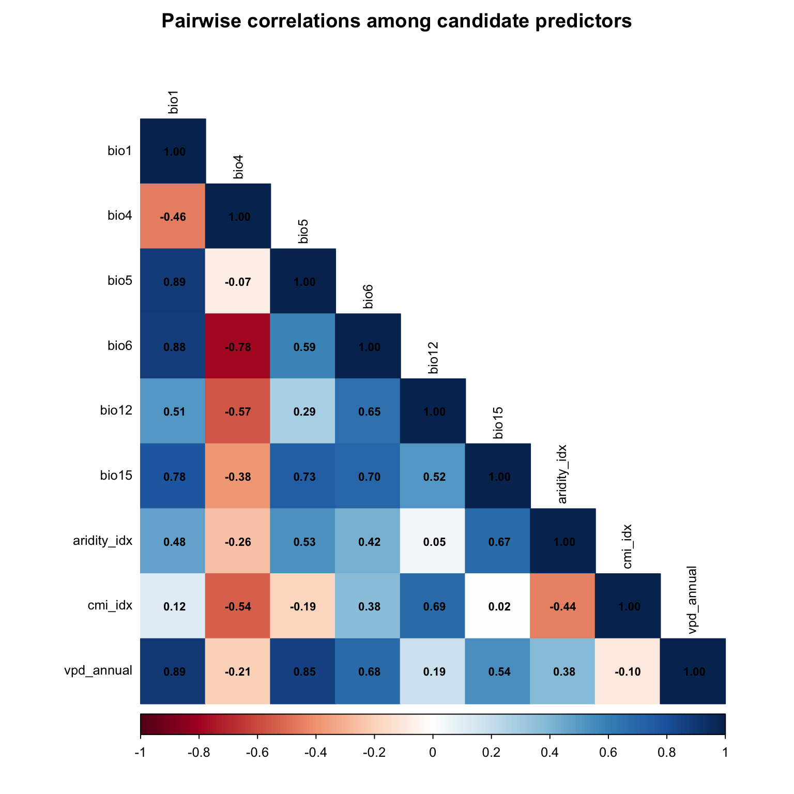

# --- Core spatial ---
library(terra)
library(sf)
library(rnaturalearth)
library(rnaturalearthdata)
# --- Data manipulation ---
library(tidyverse)
# --- SDM fitting ---
#library(maxnet)
#library(randomForest)
#library(gbm)
#library(dismo)
#library(mgcv)
# --- SDM evaluation and tuning ---
#library(blockCV)
#library(ENMeval)
#library(ecospat)
# --- Variable selection ---
library(corrplot)
# --- Spatial thinning ---
#library(spThin)
# --- Visualisation ---
library(patchwork)
library(viridis)
# --- Set seed for reproducibility ---
set.seed(7990)
# --- Paths ---
base_dir <- "/Users/gof005/Library/CloudStorage/OneDrive-CSIRO/OneDrive - Docs/01_Projects/alpha_gal/02_SAP_2025-6/Ihol_SDM"
data_dir <- file.path(base_dir, "data")
processed_dir <- file.path(base_dir, "processed_data")
output_dir <- file.path(base_dir, "outputs")
figures_dir <- file.path(base_dir, "figures")
# --- Study area extent (Eastern Australia) ---
study_extent <- ext(140, 155, -40, -10)02 Environmental Variables
1. Setup and Configuration
3. Environmental Data Preparation
# --- WorldClim bioclimatic variables ---
wc_path <- file.path(data_dir, "climate_data", "climate", "wc2.1_2.5m")
bio_files <- file.path(wc_path, paste0("wc2.1_2.5m_bio_", 1:19, ".tif"))
bio_exists <- file.exists(bio_files)
if (!all(bio_exists)) {
warning("Missing WorldClim files: ", paste(which(!bio_exists), collapse = ", "))
}
bioclim_all <- rast(bio_files[bio_exists])
names(bioclim_all) <- paste0("bio", seq_len(sum(bio_exists)))
# --- ENVIREM variables ---
envirem_path <- file.path(data_dir, "climate_data", "climate", "envirem")
envirem_files <- file.path(envirem_path, c(
"current_2-5arcmin_annualPET.tif",
"current_2-5arcmin_aridityIndexThornthwaite.tif",
"current_2-5arcmin_climaticMoistureIndex.tif"
))
envirem_vars <- rast(envirem_files)
names(envirem_vars) <- c("pet_annual", "aridity_idx", "cmi_idx")
# --- CHELSA VPD ---
chelsa_path <- file.path(data_dir, "climate_data", "climate", "chelsa")
vpd_files <- file.path(chelsa_path,
paste0("CHELSA_vpd_", sprintf("%02d", 1:12), "_1981-2010_V.2.1.tif"))
vpd_stack <- rast(vpd_files)
# CHELSA VPD is stored as Pa * 100; convert to hPa
vpd_stack <- vpd_stack / 100
vpd_annual <- mean(vpd_stack, na.rm = TRUE)
names(vpd_annual) <- "vpd_annual"
# Aggregate CHELSA from 30 arcsec to 2.5 arcmin (factor of 5)
vpd_agg <- aggregate(vpd_annual, fact = 5, fun = "mean", na.rm = TRUE)
cat("Loaded:", nlyr(bioclim_all), "WorldClim +",
nlyr(envirem_vars), "ENVIREM +", "1 CHELSA VPD layers\n")
|---------|---------|---------|---------|
=========================================
|---------|---------|---------|---------|
=========================================
|---------|---------|---------|---------|
=========================================
Loaded: 19 WorldClim + 3 ENVIREM + 1 CHELSA VPD layers3.1 Crop, Align, and Stack
# Crop all layers to study extent
bioclim_crop <- crop(bioclim_all, study_extent)
# Resample ENVIREM and CHELSA VPD to match the WorldClim grid exactly
envirem_crop <- crop(envirem_vars, study_extent)
envirem_crop <- project(envirem_crop, crs(bioclim_crop))
envirem_resamp <- resample(envirem_crop, bioclim_crop[[1]], method = "bilinear")
vpd_crop <- crop(vpd_agg, study_extent)
vpd_crop <- project(vpd_crop, crs(bioclim_crop))
vpd_resamp <- resample(vpd_crop, bioclim_crop[[1]], method = "bilinear")
# Mask to land (Australia) using country boundary
aus_vect <- vect(ne_countries(country = "Australia", scale = "medium", returnclass = "sf"))
bioclim_crop <- mask(bioclim_crop, aus_vect)
envirem_resamp <- mask(envirem_resamp, aus_vect)
vpd_resamp <- mask(vpd_resamp, aus_vect)
# Stack all environmental layers
env_all <- c(bioclim_crop, envirem_resamp, vpd_resamp)
cat("Combined environmental stack:", nlyr(env_all), "layers\n")
cat("Resolution:", res(env_all)[1], "degrees (~",
round(res(env_all)[1] * 111, 1), "km)\n")
cat("Layers:", paste(names(env_all), collapse = ", "), "\n")Combined environmental stack: 23 layers
Resolution: 0.04166667 degrees (~ 4.6 km)
Layers: bio1, bio2, bio3, bio4, bio5, bio6, bio7, bio8, bio9, bio10, bio11, bio12, bio13, bio14, bio15, bio16, bio17, bio18, bio19, pet_annual, aridity_idx, cmi_idx, vpd_annual 4. Variable Selection
We select variables based on ecological knowledge of I. holocyclus biology (Teo et al. 2021, 2024; Heath 1974) and remove multicollinear predictors.
4.1 Candidate Variable Selection
# Ecologically justified candidate variables
# Rationale:
# - bio1: Annual mean temp (overall thermal suitability)
# - bio5: Max temp warmest month (heat stress; upper limit ~32-33°C)
# - bio6: Min temp coldest month (cold stress; lower limit ~8°C)
# - bio12: Annual precipitation (moisture for off-host survival)
# - bio15: Precipitation seasonality (moisture reliability)
# - bio4: Temperature seasonality (continental vs. coastal)
# - vpd_annual: Vapour pressure deficit (desiccation risk; key in Teo et al. 2024)
# - aridity_idx: Thornthwaite aridity (integrated moisture availability)
# - cmi_idx: Climatic moisture index
candidate_vars <- c("bio1", "bio4", "bio5", "bio6", "bio12", "bio15",
"aridity_idx", "cmi_idx", "vpd_annual")
env_candidates <- env_all[[candidate_vars]]
cat("Candidate variables:", paste(candidate_vars, collapse = ", "), "\n")Candidate variables: bio1, bio4, bio5, bio6, bio12, bio15, aridity_idx, cmi_idx, vpd_annual 4.2 Multicollinearity Check
# Load thinned occurrences from previous script (use replicate 1)
occ_thinned <- read.csv(file.path(processed_dir, "thinned_occurrences", "thinned_data_thin1.csv"))
# Extract values at occurrence points for correlation analysis
occ_pts <- vect(occ_thinned, geom = c("lon", "lat"), crs = "EPSG:4326")
occ_env <- terra::extract(env_candidates, occ_pts)
occ_env <- occ_env[complete.cases(occ_env), -1] # remove ID, remove NAs
# Correlation matrix
cor_mat <- cor(occ_env, use = "pairwise.complete.obs")
# Plot correlation matrix
corrplot(cor_mat, method = "color", type = "lower",
addCoef.col = "black", number.cex = 0.7,
tl.col = "black", tl.cex = 0.8,
title = "Pairwise correlations among candidate predictors",
mar = c(0, 0, 2, 0))
{r # Identify highly correlated pairs (|r| > 0.7) high_cor <- which(abs(cor_mat) > 0.7 & upper.tri(cor_mat), arr.ind = TRUE) if (nrow(high_cor) > 0) { cat("\nHighly correlated pairs (|r| > 0.7):\n") for (i in seq_len(nrow(high_cor))) { v1 <- rownames(cor_mat)[high_cor[i, 1]] v2 <- colnames(cor_mat)[high_cor[i, 2]] r <- cor_mat[high_cor[i, 1], high_cor[i, 2]] cat(sprintf(" %s vs %s: r = %.2f\n", v1, v2, r)) } }
4.3 Variable Reduction
# Decision rules for removing correlated variables:
# If bio1 correlates with bio5 or bio6 -> keep bio5 and bio6 (more ecologically
# specific: heat/cold limits match known thresholds)
# If bio12 correlates with cmi_idx or aridity_idx -> keep bio12 + one moisture index
# If vpd_annual correlates with aridity_idx or cmi_idx -> keep vpd_annual
# (directly linked to tick desiccation)
# Start with all candidates and iteratively remove
vars_to_remove <- c()
# Check each pair and apply removal rules
# bio1 vs bio5/bio6: bio1 is a mean; bio5 and bio6 capture extremes -> remove bio1
if (abs(cor_mat["bio1", "bio5"]) > 0.7 | abs(cor_mat["bio1", "bio6"]) > 0.7) {
vars_to_remove <- c(vars_to_remove, "bio1")
cat("Removing bio1: correlated with bio5/bio6; extremes more ecologically relevant\n")
}
# aridity_idx vs cmi_idx: these are both moisture indices -> keep cmi_idx
if (abs(cor_mat["aridity_idx", "cmi_idx"]) > 0.7) {
vars_to_remove <- c(vars_to_remove, "aridity_idx")
cat("Removing aridity_idx: correlated with cmi_idx\n")
}
# vpd_annual vs cmi_idx: if correlated, keep vpd (more mechanistic for tick desiccation)
if (abs(cor_mat["vpd_annual", "cmi_idx"]) > 0.7) {
vars_to_remove <- c(vars_to_remove, "cmi_idx")
cat("Removing cmi_idx: correlated with vpd_annual; VPD is more directly relevant\n")
}
# bio4 vs bio5 or bio6: if correlated, remove bio4
if (abs(cor_mat["bio4", "bio5"]) > 0.7 | abs(cor_mat["bio4", "bio6"]) > 0.7) {
vars_to_remove <- c(vars_to_remove, "bio4")
cat("Removing bio4: correlated with temperature extremes\n")
}
# Apply removals
final_vars <- setdiff(candidate_vars, vars_to_remove)
# If we still have >7 variables or any remaining high correlations, do another pass
env_final_vals <- occ_env[, final_vars]
cor_final <- cor(env_final_vals, use = "pairwise.complete.obs")
remaining_high <- which(abs(cor_final) > 0.7 & upper.tri(cor_final), arr.ind = TRUE)
if (nrow(remaining_high) > 0) {
cat("\nRemaining correlated pairs after first pass:\n")
for (i in seq_len(nrow(remaining_high))) {
v1 <- rownames(cor_final)[remaining_high[i, 1]]
v2 <- colnames(cor_final)[remaining_high[i, 2]]
r <- cor_final[remaining_high[i, 1], remaining_high[i, 2]]
cat(sprintf(" %s vs %s: r = %.2f\n", v1, v2, r))
# Remove the less ecologically important one
# Priority: bio5 > bio6 > vpd_annual > bio12 > bio15 > bio4 > cmi_idx > aridity_idx
if (v2 %in% c("cmi_idx", "aridity_idx", "bio4", "bio15")) {
final_vars <- setdiff(final_vars, v2)
cat(sprintf(" -> Removing %s\n", v2))
} else if (v1 %in% c("cmi_idx", "aridity_idx", "bio4", "bio15")) {
final_vars <- setdiff(final_vars, v1)
cat(sprintf(" -> Removing %s\n", v1))
}
}
}
# Ensure we have at least 4 and at most 7 variables
cat("\nFinal predictor set (", length(final_vars), "variables):",
paste(final_vars, collapse = ", "), "\n")
# Subset environmental stack
env_model <- env_all[[final_vars]]Removing bio1: correlated with bio5/bio6; extremes more ecologically relevant
Removing bio4: correlated with temperature extremes
Remaining correlated pairs after first pass:
bio5 vs bio15: r = 0.73
-> Removing bio15
bio6 vs bio15: r = 0.70
-> Removing bio15
bio5 vs vpd_annual: r = 0.85
Final predictor set ( 6 variables): bio5, bio6, bio12, aridity_idx, cmi_idx, vpd_annual 4.4 VIF Check
# Calculate VIF manually (terra-based approach)
occ_env_final <- occ_env[, final_vars]
occ_env_final <- occ_env_final[complete.cases(occ_env_final), ]
# VIF calculation
calc_vif <- function(df) {
vif_vals <- numeric(ncol(df))
names(vif_vals) <- names(df)
for (i in seq_along(names(df))) {
formula_str <- paste(names(df)[i], "~", paste(names(df)[-i], collapse = " + "))
model <- lm(as.formula(formula_str), data = df)
r2 <- summary(model)$r.squared
vif_vals[i] <- 1 / (1 - r2)
}
return(vif_vals)
}
vif_values <- calc_vif(occ_env_final)
cat("VIF values:\n")
print(round(vif_values, 2))
# Remove any with VIF > 10 (iteratively)
while (max(vif_values) > 10 & length(final_vars) > 3) {
worst <- names(which.max(vif_values))
cat("Removing", worst, "with VIF =", round(max(vif_values), 2), "\n")
final_vars <- setdiff(final_vars, worst)
occ_env_final <- occ_env_final[, final_vars]
vif_values <- calc_vif(occ_env_final)
}
cat("\nFinal variables after VIF screening (", length(final_vars), "):",
paste(final_vars, collapse = ", "), "\n")
cat("VIF values:\n")
print(round(vif_values, 2))
# Update environmental stack
env_model <- env_all[[final_vars]]VIF values:
bio5 bio6 bio12 aridity_idx cmi_idx vpd_annual
6.93 7.66 4.69 3.43 5.09 8.93
Final variables after VIF screening ( 6 ): bio5, bio6, bio12, aridity_idx, cmi_idx, vpd_annual
VIF values:
bio5 bio6 bio12 aridity_idx cmi_idx vpd_annual
6.93 7.66 4.69 3.43 5.09 8.93 5. Save Outputs
env_out_dir <- file.path(output_dir, "env_layers")
dir.create(env_out_dir, recursive = TRUE, showWarnings = FALSE)
# Full 23-layer stack (all candidate variables)
writeRaster(env_all,
file.path(env_out_dir, "env_all.tif"),
overwrite = TRUE)
# Final model stack (VIF-screened variables only)
writeRaster(env_model,
file.path(env_out_dir, "env_model.tif"),
overwrite = TRUE)
# Selected variable names
saveRDS(final_vars, file.path(env_out_dir, "final_vars.rds"))
cat("Saved env_all.tif (", nlyr(env_all), "layers)\n")
cat("Saved env_model.tif (", nlyr(env_model), "layers):",
paste(final_vars, collapse = ", "), "\n")
cat("Saved final_vars.rds\n")
cat("Output directory:", env_out_dir, "\n")Saved env_all.tif ( 23 layers)
Saved env_model.tif ( 6 layers): bio5, bio6, bio12, aridity_idx, cmi_idx, vpd_annual
Saved final_vars.rds
Output directory: /Users/gof005/Library/CloudStorage/OneDrive-CSIRO/OneDrive - Docs/01_Projects/alpha_gal/02_SAP_2025-6/Ihol_SDM/outputs/env_layers